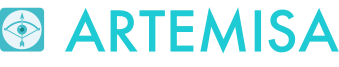
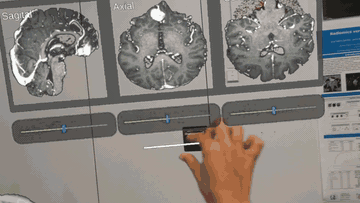
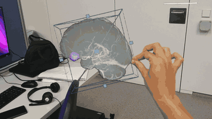
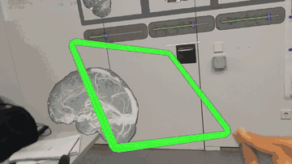

Realidad aumentada
Virtualización de imagen médica con visualización 3D accesible desde web y smartphone, y con dispositivos de realidad aumentada como HoloLens 2 para asistencia quirúrgica y neuroquirúrgica.
Virtualización de imagen médica con visualización 3D accesible desde web y smartphone, y con dispositivos de realidad aumentada como HoloLens 2 para asistencia quirúrgica y neuroquirúrgica.
Nuevo concepto de visualización de biomarcadores de imagen médica a través de web y smartphone: visualización gráfica rápida de la segmentación de columna vertebral. Prueba el visor tú mismo, incrustado aquí abajo: gira, haz zoom y explora el modelo 3D con el ratón o el dedo, sin salir de la página.
Visor con cortes sagital, axial y coronal superpuestos en AR sobre modelo físico/paciente, con control deslizante por plano, navegación multiplanar, recorte y medición del volumen reconstruido.


Navegación RM multiplanar

Recorte de volumen 3D

Plano de corte 3D
Visualización de la columna vertebral reconstruida mediante gafas de realidad aumentada HoloLens 2, superpuesta sobre el campo quirúrgico real.
Participamos en consorcios internacionales donde la imagen médica mejora la atención sanitaria real.